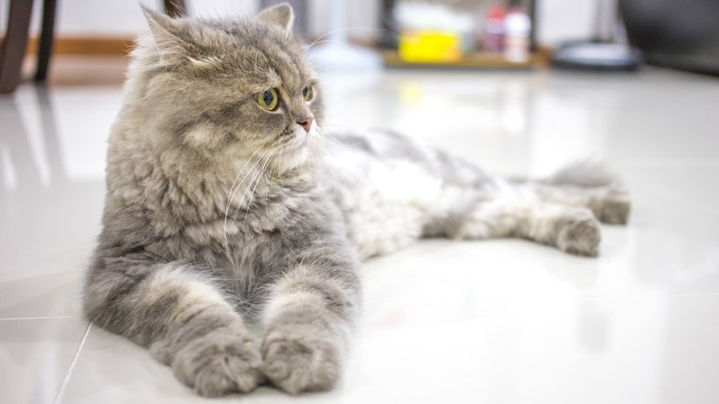

У персов роскошная длинная тонкая шерсть, которая требует ежедневного ухода. В противном случае она сваливается, на подшерстке образуются колтуны, и привести этот комок в приличный вид становится невероятно сложно. Поэтому персов следует каждый день вычесывать, используя два вида расчесок: с редкими зубьями для основной шерсти и с частыми зубьями для ухода за подшерстком. Мыться персы не любят, поэтому водные процедуры становятся испытанием на прочность как для них, так и для хозяев.
